Martin Charles Scorsese
Edad: 76 años.
Ocupacion: Director, guionista.
Email: martinscor@gmail.com
Web: www.MartinScorsese.com
Cel: +1 (718) 798-2898
Biografia
Fecha y Lugar de Nacimiento:
17 de noviembre de 1942, New York, Estados Unidos
Nacionalidad:
Estadounidense Italiana
Estado Civil:
Casado
Educacion
Universidad de Nueva York
Tisch School of the Arts
Cardinal Hayes High School
Titulos:
Bachelor of Arts en filología inglesa (NYU)
Máster en Bellas Artes (School of Arts)
Informacion Profesional
Ocupacion:
Director, Productor, Guionista, Actor, Documentalista
Cargos ocupados:
Presidente del jurado del Festival de Cannes
Años activo:
1963-presente
Miembro de:
Academia Estadounidense de las Artes y las Ciencias
Presidente de:
The Film Foundation
Fundador de:
World Cinema Foundation.
Premios
Premios Óscar:
Mejor director:
2006 • The Departed
Globos de Oro:
Mejor director:
2002 • Gangs of New York
2006 • The Departed
2011 • Hugo
Premio Cecil B. DeMille
2010 • Premio a la Trayectoria Profesional
Premios BAFTA:
Mejor director:
1990 • Goodfellas
Mejor guion adaptado:
1990 • Goodfellas
BAFTA Honorífico:
2012 • Premio a la Trayectoria Profesional
Premios Emmy:
Mejor dirección en una serie dramática:
2010 • Boardwalk Empire
Festival de Cannes:
Palma de Oro:
1976 • Taxi Driver
Mejor director:
1985 • After Hours
Premios César:
César Honorifico:
2000 • Premio a la Trayectoria Profesional

Filmografia


 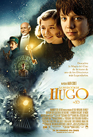
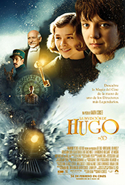
 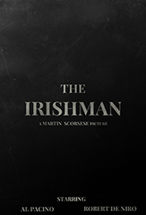
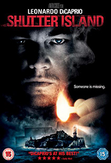
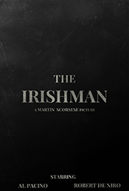
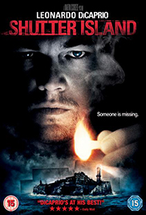
 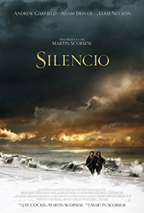
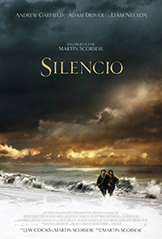
 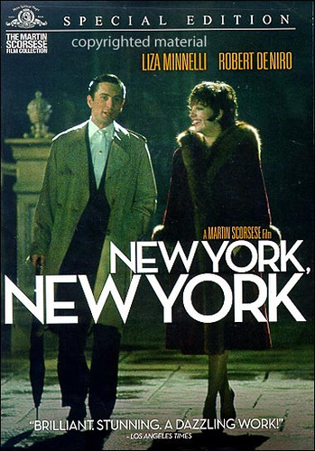
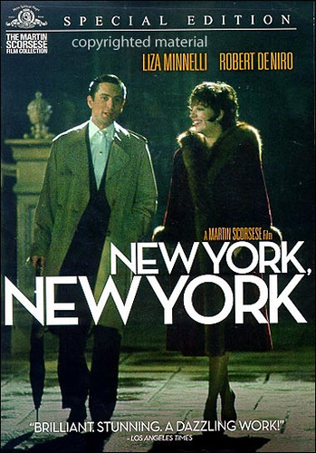
 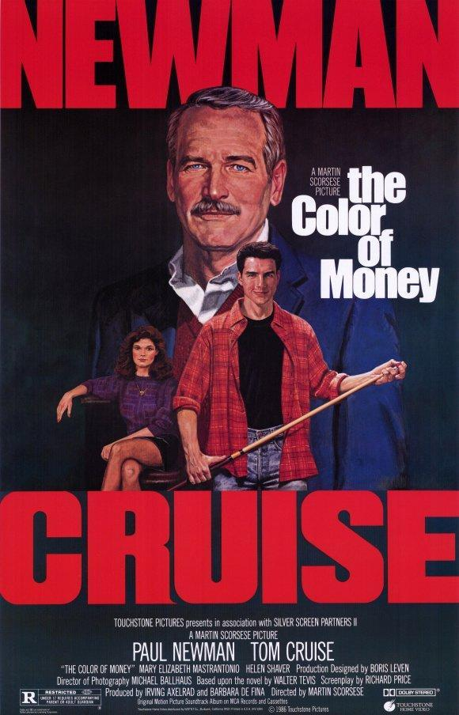
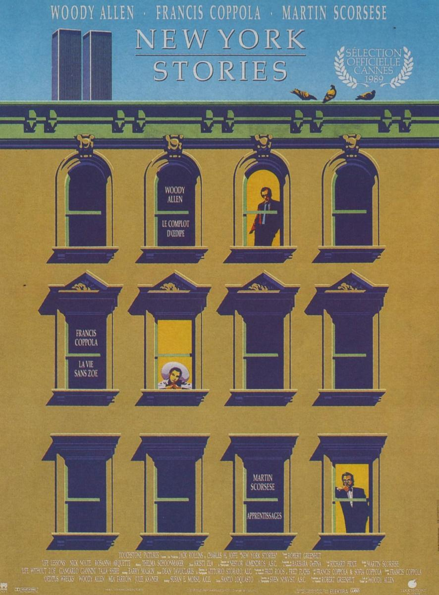
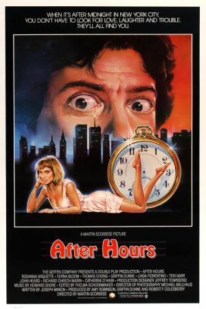
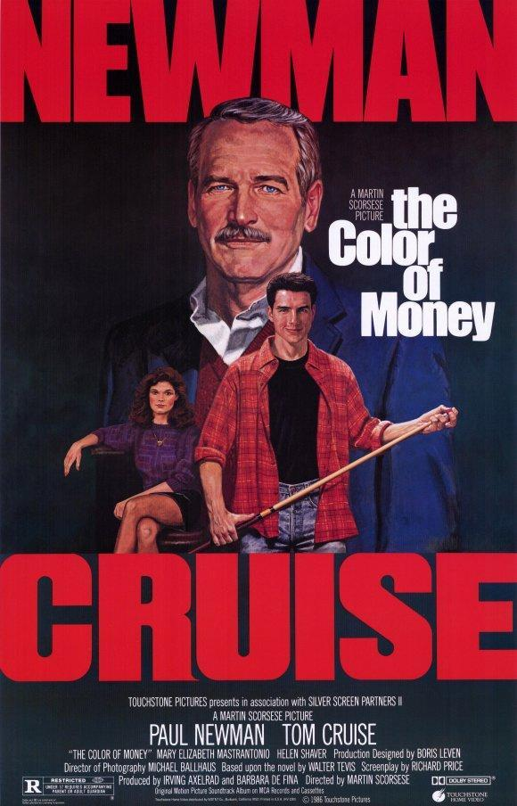
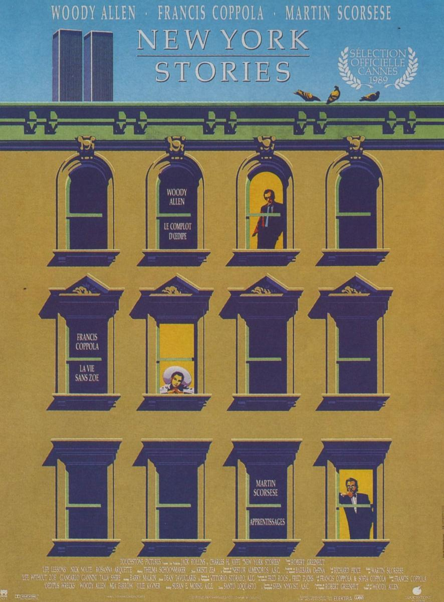
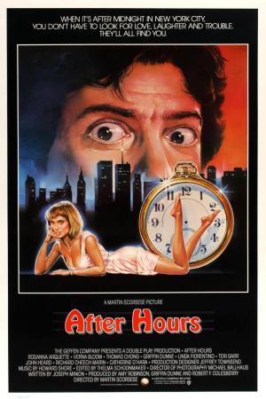